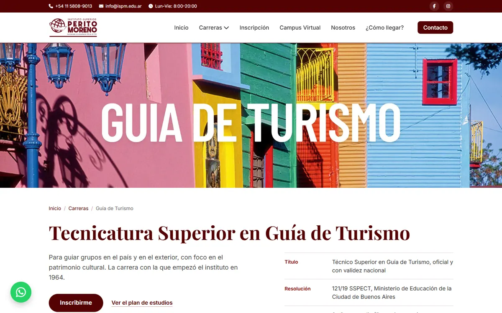
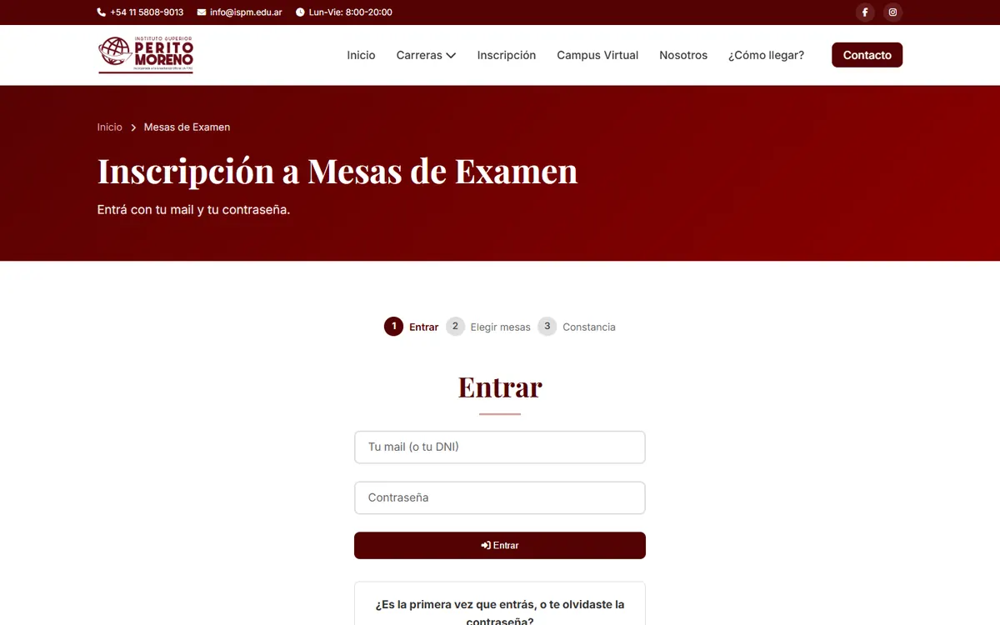

El problema
El instituto tenía más de 60 años de trayectoria pero su presencia web era prácticamente nula. No había forma de que los alumnos consultaran información académica online, ni un espacio para que los profesores gestionen contenidos.
Necesitaban un sitio que explique las carreras y reciba inscripciones, y un sistema propio para mesas de examen y cursada: alumnos, profesores y administración, cada uno viendo solo lo suyo.
Qué hice
- Sitio institucional
- Portada con video, las tres carreras con título, resolución y plan de estudios, ubicación y contacto. Los formularios de inscripción y consulta llegan por mail.
- Inscripción a mesas de examen
- El alumno entra con su mail o DNI, elige las mesas y se lleva una constancia. Administración carga períodos y mesas y genera las actas.
- Campus virtual
- Alumno, profesor y administración en un mismo campus: materias, calificaciones, cronograma, mensajes, material de cursada y entregas. El alta de usuarios se puede hacer de a uno o con una planilla.
Más pantallas


Stack
Frontend
- HTML
- CSS
- JavaScript vanilla
Sin frameworks ni build: se sube tal cual al hosting.
Backend
- PHP
- MySQL / MariaDB
- PHPMailer
Una API propia en PHP sobre el hosting cPanel del instituto. Los mails salen por el SMTP del mismo hosting.
Decisiones
De Supabase a MySQL. El campus empezó en Supabase. Lo migré entero a MySQL y una API en PHP para que todo viva en el hosting del instituto, con un chequeo que confirma que ya no queda nada apuntando a Supabase.
La seguridad vive en el servidor. MySQL no tiene las políticas por fila de Postgres, así que ninguna pantalla habla con la base: cada endpoint exige sesión y rol, y el usuario sale siempre de la sesión del servidor, nunca de lo que manda el navegador.
Nadie tuvo que cambiar su contraseña. Los hashes bcrypt de Supabase se validan tal cual en PHP y se rehacen con un costo más alto la primera vez que cada uno entra.
Archivos solo para quien corresponde. Antes cualquiera con el link bajaba el material. Ahora cada descarga verifica que quien la pide curse la materia, la dicte o sea de administración.
Verlo andando
El sitio y la inscripción a mesas están publicados. El campus todavía está en desarrollo.